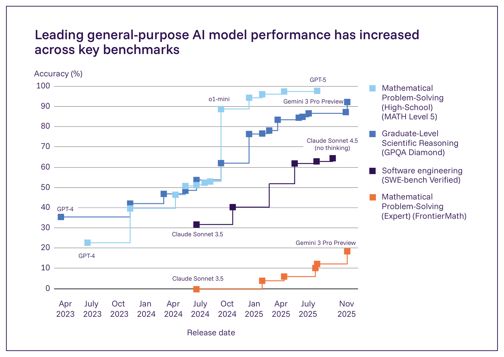
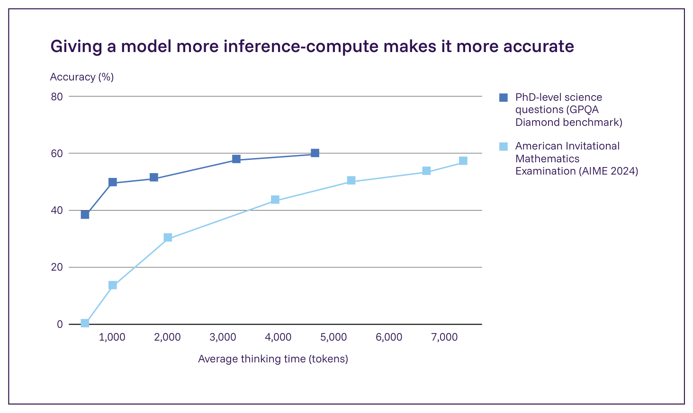

日本語訳
| ほとんどの専門家が現在の汎用AIが遂行できると同意するタスク | ほとんどの専門家が現在の汎用AIが遂行できないと同意するタスク |
|---|---|
| 多くの言語での流暢な会話 | 複数日にわたるプロジェクトの独立した実行 |
| 狭く明確に定義されたソフトウェアタスクのためのコードの記述とデバッグ | 非常に高い信頼性で虚偽の陳述（「ハルシネーション」）のないテキストの生成 |
| 非常に写実的な画像と短い動画クリップの作成 | 家事のような、ロボティクスを伴う有用なタスクの遂行 |
| 大学院レベルの、適切に設定された試験形式の数学・科学問題の解決 | 新規の洞察または重い構成的推論を必要とする数学・科学問題の解決 |
| 文献レビューやデータ分析などを通じた科学研究への貢献 | 英語に比べてデジタル上の存在感が著しく少ない言語での同等の成績 |

Figure 1.4: 2023年4月から2025年11月までの主要ベンチマークにおける最先端汎用AIシステムのスコア。これらのベンチマークは、プログラミング（SWE-bench Verified）、数学（MATHおよびFrontierMath）、科学的推論（GPQA Diamond）における困難な問題をカバーしている。OpenAIのo1のような推論システムは、MATHベンチマークで明確に示されているように、数学的タスクにおいて著しく改善された性能を示す。出典: Epoch AI, 2025 (138)。

Figure 1.5: 様々な量のテスト時計算（すなわち、推論中に追加の計算資源を使用する場合）を用いた、推論集約的タスクにおける汎用AIモデル（s1）の性能。応答生成中により多くの計算時間を割り当てることは、数学（AIME 24）と博士レベルの科学問題（GPQA Diamond）において著しく良い結果につながる。出典: Muennighoff et al., 2025 (173)。並行して、AI企業は、ソフトウェアエンジニアリング（168）やコンピューター利用（169*, 170*）といった分野を特に、AIエージェントの開発により重点を置いてきた。信頼性は依然としてボトルネックであるが、これらのエージェントが自動化できるタスクの複雑さは急速に増大している（98）。最後に、モデルが長期的な記憶を形成し、ユーザーとの相互作用から継続的に学習できるようにすることが、開発の重要な分野として浮上している（171, 172*）。